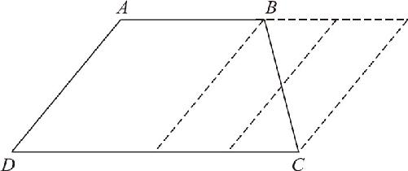
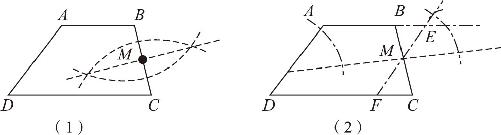
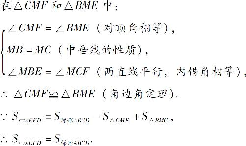
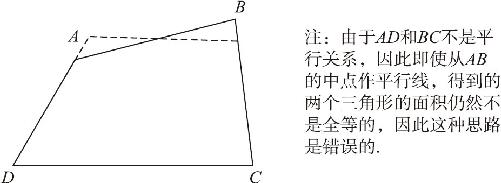
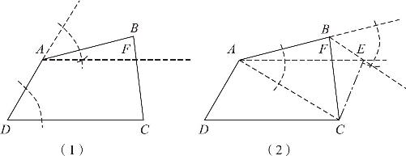
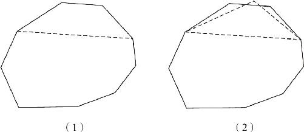
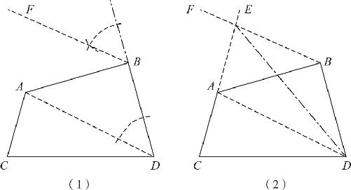

世界上的所有事物，都在不同之中蕴含着相同的哲理，都在变化之中蕴含着不变的规律．数字的加减乘除是如此，几何的图形变换也是如此．当我们理解了同底等高的三角形面积不变以后，我们就可以进行更加复杂的图形变换，接下来我们就研究一个梯形如何变换为平行四边形．
如图7－7所示，现有任意一个梯形ABCD ，其中AB ∥CD ，现在需要我们把它转变为一个等面积的平行四边形．下面我们先来分析一下：首先，梯形和平行四边形的唯一区别在于，梯形只有一组对边平行，它的两条腰AD 和BC 是不平行的，而平行四边形的两组对边都互相平行，因此要想把它变为平行四边形，就需要我们把它的其中一条腰扭转一下，扭转到和另一条腰平行的状态，那么我从什么位置执行扭转的动作呢？由于梯形的下底DC 比较长，因此我们若从B 点作一条和AD 平行的直线，就能产生一个平行四边形，但是这样就会把梯形的右下角砍掉一个三角形，这样一来，剩下的面积就和梯形的面积不相等了，同样，如果我们从下边的C 点作一条平行线，也就会在它的右上角多出一个三角形来，同样不满足要求．

图7－7
上下两个顶点都不行，因此，我们就只能从BC 的正中心作一条AD 的平行线，这样一来，梯形的右上角多出了一个小三角形，右下角又减去了一个小三角形，这两个小三角形又是一对全等三角形，它们的面积又是相同的，因此，这个四边形的面积就是在梯形的基础上，分别加减了同一个面积的结果，所以，它的面积就等于梯形的面积了．以下是具体的操作步骤：（如图7－8所示）

图7－8
第一步，作BC 的垂直平分线，交BC 于点M ；
第二步，过点M 作AD 的平行线EF ，交AB 的延长线于点E ，交CD 于点F ．平行四边形AEFD 即为所求．
以下给出简要证明过程：

以上就是把梯形转变成等面积平行四边形的转换方法．通过这种方法，我们就可以比较任意梯形和平行四边形的面积大小；同时由于我们掌握了平行四边形和矩形的转换方法，因此只要再经过一次变换，就把任何一个梯形转换为等面积的长方形．那么如果土地的形状不是梯形，而是一个四边都不平行不相等的任意四边形呢？接下来，我们就把一个任意形状的四边形转变为等面积的梯形．
如图7－9所示，任意四边形ABCD 没有任何一组边相互平行，现在，我们需要把这个四边形转变为一个等面积的梯形．由于梯形上下底是平行的，因此，我们只需要把上边AB 扭转一下，让它保持和DC 平行就可以了．显然，无论是在A 点还是在B 点扭曲，都会导致面积的改变，由于AD 和BC 并不平行，因此，即使我们想在AB 的中点来完成这次扭转，仍然无法得到所需的结果．因此，要想完成这次转换，必须另辟蹊径．根据前文中学的图形变化的定理我们知道，夹在两条平行线之间的同底的三角形是可以任意变形的．因此，可以尝试利用这个定理来完成这次转换：

图7－9
首先连结AC ，通过这条对角线把四边形切分成两个部分，由于要扭转的是上底AB ，而这种方法不会影响下面的三角形ADC 的面积，就可以保持△ADC 的部分不变．现在，我们就需要在B 点的附近找到一个新的顶点E ，该顶点需要满足两个条件：第一，要把原图转换成梯形，因此必须使AE ∥DC ；第二，要保障原图形面积不变，因此需要保障新三角形△AEC 的面积等于原三角形△ABC 的面积．由于在△AEC 和△ABC 中存在公共边AC ，因此要想让两个三角形面积相同，必须使AC 边上的高相同，而要想保证高相同，就必须让变形后的三角形和原三角形卡在两条平行线之间，即BE ∥AC ．通过上述分析，我们理清了思路，于是得到如下的过程：（如图7－10所示）

图7－10
第一步，过A 点作AF ∥DC ．
第二步，连结AC ，并过点B 作BE ∥AC ，交AF 于点E ，连结CE ，梯形AECD 即为所求．
简要证明过程如下：
∵BE ∥AC ，
∴S △AEC ＝S △ABC （等积三角形变换）．
∵AE ∥DC ，
∴四边形AECD 是梯形．
且由图示不难发现
S 梯形AECD ＝S △ACD ＋S △AEC ＝S △ACD ＋S △ABC ＝S 四边形ABCD ．
因此，四边形AECD 即为所求梯形．
最后，我们要完成等面积图形变换的最后一步，把一个任意的多边形的面积转变为四边形，一旦完成了这次转变，就可以对任意多边形的土地面积进行比较了．如何完成这样的转变呢？先把这个多边形盖住一部分，无论这个图形多么复杂，我们只关注其中的三条边，这三条边首尾相接，一共有四个顶点，如果我们把这四个顶点连起来，就变成了一个任意四边形．这个多边形的面积等于我们盖住的部分的面积加上四边形的面积．如果能把这个四边形变成一个等面积的三角形，就等于为多边形减少了一条边，并且保持面积不变．（如图7－11所示）

图7－11
经过上述操作，就可以把N 边形变为N －1边形．因此，无论这个多边形有几条边，都可以在保持面积不变的前提下，通过不断重复上述步骤，把它变成一个任意四边形．当然，还可以把它变成梯形，变成平行四边形，最后变成长方形．整个过程能否顺利实现，就取决于一开始的假设能否成立，也就是说，能否把一个任意四边形，变成一个等面积的三角形．接下来，我们就重点突击这个难题．
如图7－12所示，有一个任意四边形ABCD ，要求把它转变为一个等面积的三角形．我们可以保持CD 不变，只需要在AB 的上方找一点E ，使△ECD 的面积等于四边形ABCD 即可，使用平行线等面积变换的定理就可以完成这一过程：
第一步，连结AD ，目的是保持△ACD 的面积不变；过B 点作AD 的平行线BF ，在BF 和AD 这两条平行线之间，作出一个△AED ，使△AED 的面积和△ABD 相等．
第二步，延长CA ，使CA 和BF 产生一个交点E ，最后连结ED ，△ECD 即为所求．

图7－12
证明过程如下：
∵BF ∥AD （作图所得），
∴S △AED ＝S △ABD （夹在平行线内的同底等高的三角形面积不变），
∴S △CED ＝S △AED ＋S △CAD ＝S △ABD ＋S △CAD ＝S 四边形ABCD ，
∴△ECD 即为所求．
掌握了四边形变成三角形的方法，就等于掌握了为多边形减去一条边的方法．当我们遇到任意多边形的时候，可以先选取它的一小部分，找到三条紧邻边，把它们连接成一个四边形，再把这个四边形通过刚才的方法变换成三角形，这样多边形就减去了一条边，不断重复这种做法，就可以陆续把多边形变成四边形．然后依次把它变成梯形、平行四边形和矩形．这就意味着所有的多边形都能变成矩形，于是，所有图形的面积也就具备了可比性．我们终于在千变万化的几何图形中，找到了保持面积相等的转换规律．而所有这一切，全部来源于同底等高的三角形面积不变，又是全部来源于三角形的角边角判定定理．
边边边定理教会了我们尺规作图的加减乘除，角边角定理教会了我们保持面积不变，于是我们知道，天下图形皆出于三角形．在学习中，也会学到平行四边形、长方形、正方形和菱形的性质定理及判定定理，但实际上，只要你轻松驾驭了三角形的判定定理，四边形的定理全部可以举一反三地去理解，轻而易举地运用．